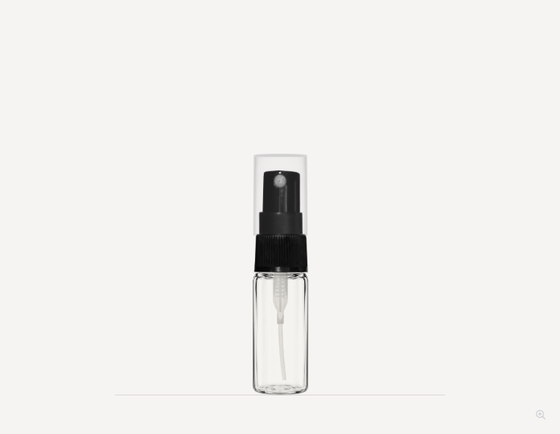
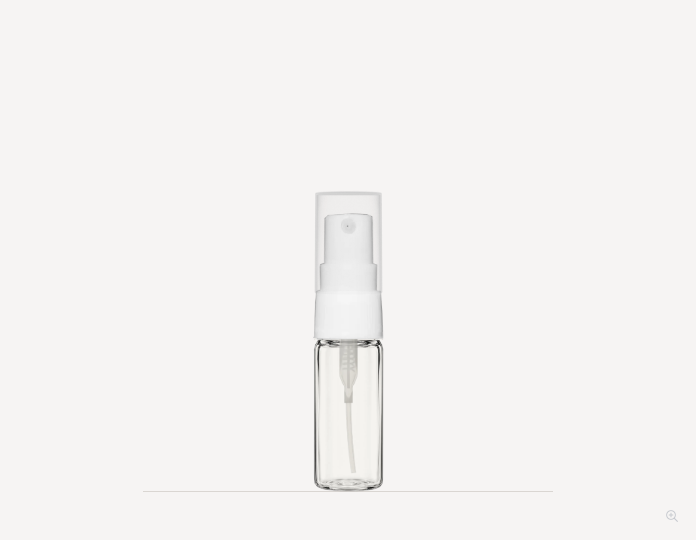
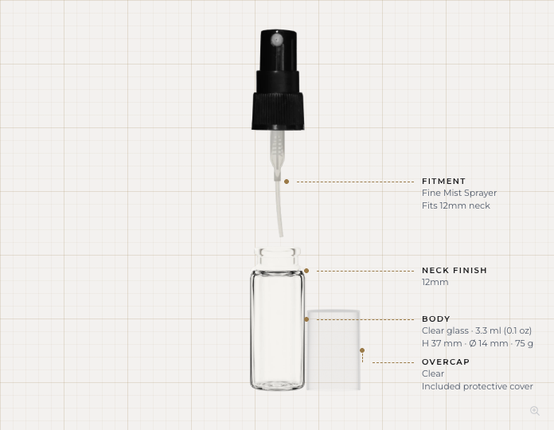
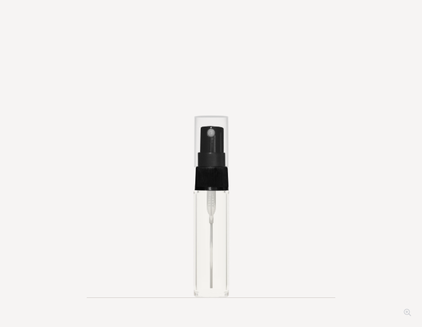
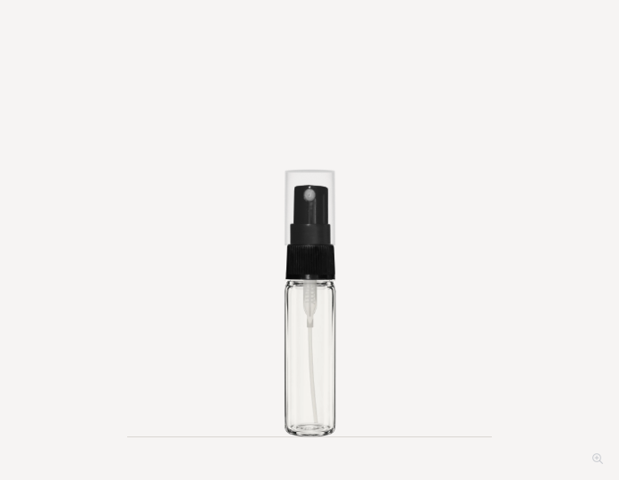
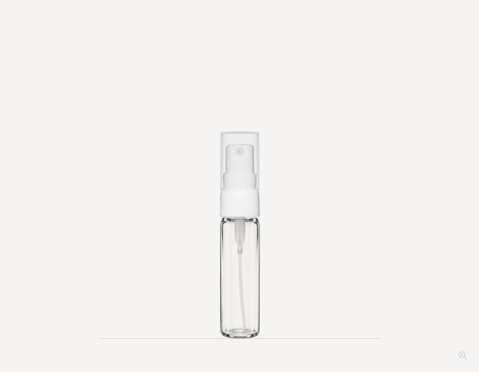
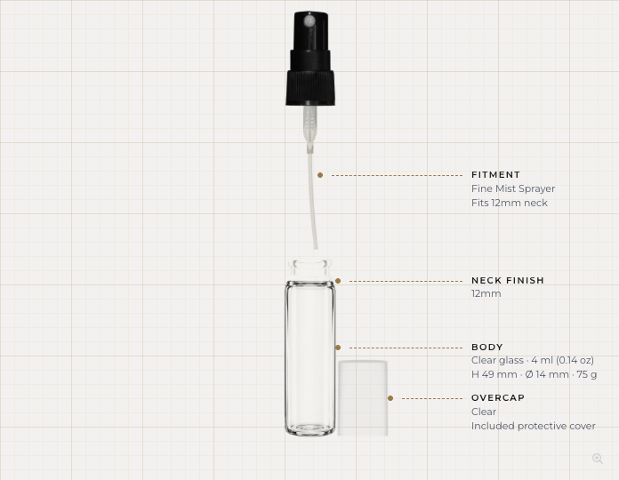
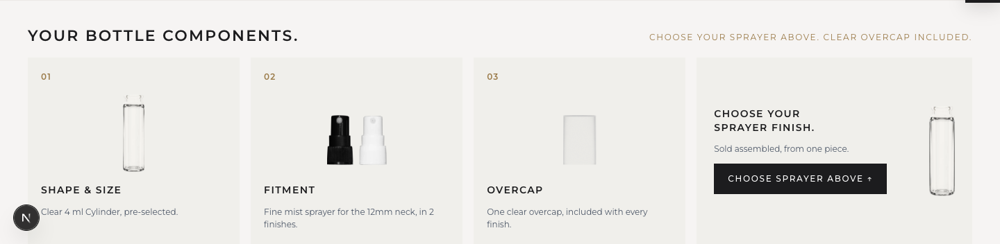

3.3 ml and 4 ml: glass and dip tubes
The existing GPT glass artwork now appears in the stage, glass thumbnail and component strip. The complete native neck is retained above the GPT exposed body. Bottle dimensions, family scale and base position are preserved.
The hollow Blender tubes now have a gentle bend. Diameter remains 1.1 mm, with more than 1.8 mm clearance above the modeled interior base. Black and white sprayers share the same glass and mechanism for each size. These two bottles remain product-page only.
All 12 product states load and retain stable framing. No new AI generation or production publication. Sources and verification · Elegant caps: latest flush seating
3.3 ml
Before
GPT glass with curved Blender tube
White sprayer, same glass and tube
Exploded mechanism Updated component strip, same shared masterOpen 3.3 ml product page
4 ml

Before
GPT glass with curved Blender tube
White sprayer, same glass and tube
Exploded mechanism
Updated component strip, same shared masterOpen 4 ml product page